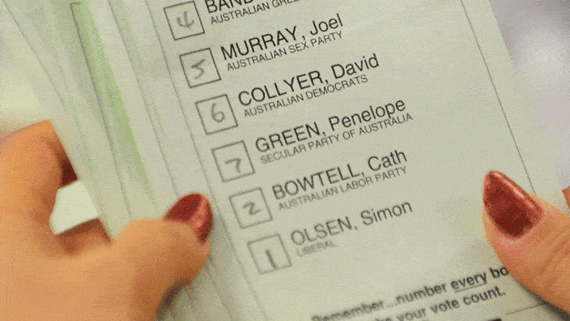
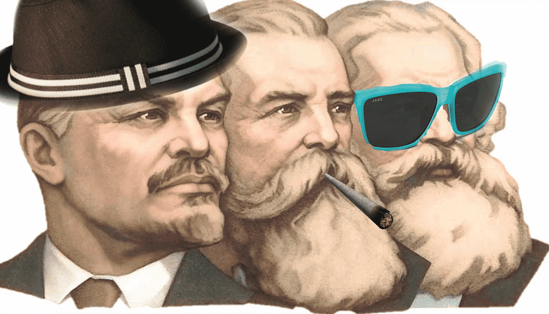

Thomas Hobbes is an Australian uni student hiding out in his mother's basement waiting for the singularity to arrive. As a backup plan he is secretly hoping to avoid the perils of an actual career by becoming a writer and travelling the world.


Australia is a country of which I am very proud, though even the best countries have their quirks. One of ours is the almost insane proliferation of minor parties in the Australian political system. To our friends overseas this will make little sense. Doesn’t voting for a minor party simply split the vote? But we have a curious method to get around the duopoly that is the two-party system.
Australia has a preferential voting system, meaning that rather than ticking a box, we number the parties on the ballot from first to last. When the ballots are tallied, they go through several rounds in an instant run-off process. The last candidate is eliminated and their second choice preferences distributed to the rest. This process is then repeated until only two candidates remain, deciding the winner.

While a bit confusing, this system is a boon to everyone from the hippie socialist to the ardent neo-nazi. It keeps the major parties paying attention to the fringes, or else risk bleeding votes. This is why the Greens for instance, win around 10% of the vote in Australian elections, while in America they’re lucky to win 0.5%.
The flip-side of course, is that since any man and his dog (with $500 and 500 signatures) can start their own political party, choice abounds. Last election, the NSW senate ballot paper had 110 names listed and was more than a meter long. The current list of registered parties can be found here and the vote will take place on July 2.
So who to choose?

A couple of hundred dirty hippies still holding out for the overthrow of the bourgeoisie. The Socialist Alliance has long been irrelevant in Australian politics – and continues to remain so. Initially soaring in 2004 to a tenth of a percent of the vote, they now win about a fifth of that.
Also – don’t confuse them with the Socialist Alternative. They hate it when people confuse them for the Socialist Alternative. Nobody is quite sure why.
Yes, you read that name right. I had several co-workers who voted for this party last election. It got them an upper house seat in Victoria.
Fiona Patten – Australia’s ‘Sex’ Senator
This party gets points for sheer ballsiness. They’re also for legalising drugs, against censorship and on board with a few other ‘civil libertarian’ policies that may get a nod, but overall they could hardly be more diametrically opposed to your typical manosphere crowd.
They’re steadfastly for abortion, gay marriage, euthanasia and a laundry list of other trendy leftist causes. They’re basically the political arm of Australia’s (rapidly growing) sex industry with a social justice flavor throw in. A whole section of their website is devoted to ‘LGBTIQ asylum seekers’. Need I say more?
Ah—the Greens. Australia’s third largest party with ten Senators in the upper house and one representative in the lower. The Greens are what happens when an entire generation of people grow up without ever having visited the real world.
DUUUUUDE
Likes: trains, bicycles, whales, windmills, marijuana, socialism, veganism and long acronyms.
Dislikes: cars, highways, mines, fossil fuels, hard work, guns and wealthy capitalist pig-dogs.
Do not vote for them if you enjoy such luxuries as electric lighting, hot showers and paid employment.
Found in 2013 by (semi-)billionaire Clive Palmer to try and stroke his tiny penis to erection reunite the nation. Won a surprising 5% of the vote in 2013. Elected three senators, all of whom immediately fucked off except for one bewildered-looking Asian guy, leaving the party more-or-less defunct.
Mr Parma absorbing nutrients from the surrounding environment
Note this is essentially what happens when a Donald Trump-esque figure tries to run for parliament in Australia. They may get elected, but they’ll end up just one guy among 150 and will be sent to sit quietly in the corner accordingly.
Who comes up with these names?
This party won the lucky dip at the last election (literally). By a fortunate flow of excess preferences from dozens of micro-parties was plucked AMEP Senator Ricky Muir. Having just lost his job at a sawmill, he suddenly found himself working a $200,000 a year job as an Australian senator.
To date, nobody really knows what he stands for or what we’re getting for our taxpayer dollars. As such, we can consider him the current living embodiment of the phrase “she’ll be right mate!”
One of Australia’s oldest and proudest parties with a long history of nearly winning elections, Labor is the political arm of Australia’s union movement and is seeking to take back the house from the coalition which it lost in 2013. The main plank of its economic policy is to spend way more money then we actually have until the country goes broke and somebody else has to pay for it.
The latest polling shows Labor neck-and-neck with the coalition, though they are unlikely to win the requisite number of seats. Hopefully the country still has not forgotten the Rudd-Gillard government (2007-2013) leaving Australia hundreds of billions in debt and luring more than a thousand asylum seekers to their deaths before the coalition sealed off the border again. A sure path to eventual fiscal and cultural ruin.
A once great force of Australian politics, a welcome counterweight to the excesses of the Labor Party and brake on Australia’s slide into leftism. Comprises the business-oriented ‘Liberal’ Party (equivalent to the UK’s Tories or America’s Republicans) and the rural National Party.
Unfortunately, the Coalition in 2016 is struggling to distinguish itself from Labor, having knifed previous leader Tony Abbot last year and moved to the left on issues like welfare and gay marriage. Definitely worth putting them before Labor on the ballot, but would strongly recommend picking at least one of the minor conservative parties below, where men of principle can still be found, as a warning.
This party lucked out majorly in the 2013 elections, where they were placed first on the ballot in New South Wales. Roughly 10% of the electorate saw the word ‘liberal’ and thought they were voting for the Coalition (they won roughly 0.1% elsewhere) handing them a senate seat. Isn’t democracy great?
This is our equivalent of the libertarian party, so they’re worth a look. Anti big government, regulation, high taxes and welfare. Possibly the only party that could save Australia from economic oblivion, were it by some miracle able to form a government.

Diametrically opposed to the Sex Party, we may find common ground here, though they come from a conservative Christian viewpoint (divergent from my own agnosticism). Anti-abortion, anti-drugs, anti-gay marriage and anything else post 1950s. Currently with one senator, they have rarely polled above 2% since forming in 2001.
Another name you read right. Australia has a political party specifically for the gun nuts.
Originally called the ‘Shooters Party’, then the ‘Shooters & Fishers Party’ before adopting the current ‘Shooters, Fishers & Farmers’, this is basically a party where all of Australia’s Steve Irwin and Mick Dundee-types are slowly gathering. Before long, I fully expect their name to read the Shooters, Fishers, Farmers, Campers, Lumberjacks, Crocodile Hunters And Just General Manliness Party.
‘That’s not a political party…’
Originally just anti-gun control, they are now anti-big government, anti-greens and in general anti-insanity, making them a definite option if you’re an American who happens to move to Australia. In fact, this is probably the closest we already have to a manosphere party.
Oh—and they also hold seats in three Australian states. Worth a look.
Once Australia’s primary anti-immigrant party, achieving 9% polling nationwide at the 1998 election (and 22% in Queensland – because of course). Was the victim of its own success when the conservative Howard government (1996-2007) adopted its policies with a hard line on immigrants that continues to this day.
As of 2016 Fuhrer Pauline Hanson has returned to the Fatherland and once again intends to lead the nation to glory. It is unclear if the party will win a significant share of votes, mostly due to competition from newer parties like –
One Nation wannabes also derived from the new wave of anti-immigrant parties in Europe. They recently picked former rock star Gary ‘Angry’ Anderson as a candidate and have been putting anti-political correctness signs up everywhere, which makes them ok in my book. If they’re lucky, they might turn into a sort of Australian UKIP and drag the argument back against the multiculturalism that is slowly eroding our nation’s foundations.
So there you have it, how we do things down under. Note this is just a sample. I didn’t even mention groups like the ‘Animal Justice Party’, ‘Help End Marijuana Party’, ‘No Carbon Tax Climate Skeptics’, ‘Bullet Train For Australia’, ‘Pirate Party’ and others bands of assorted fuckwits.
Honestly, a part of me has toyed with the idea of starting a manosphere party of some sort – perhaps the ‘Neomasculine’ Party? Or the ‘Redpill Alliance?’ But lets face it, while it may get a decent amount of press, we’d be lucky to receive more than a few thousand votes. Give it time.
If anything, the biggest problem we have here is that all of the far-right parties are focused around specific issues. Most people left-of-center tend to congregate in the Greens, allowing them to make a real mark on Australian politics. If all of our little right-wing parties combined they’d win close to 10% of the vote, enough to make the big boys notice and present a real alternative to the soft-cocks in the coalition, just as the Greens have been slowly bleeding votes away from Labor.
Now there’s a plan for Australia’s future.
Read More: Australian Senator Gets Attacked By The Media For Merely Tweeting One Of Roosh’s Articles